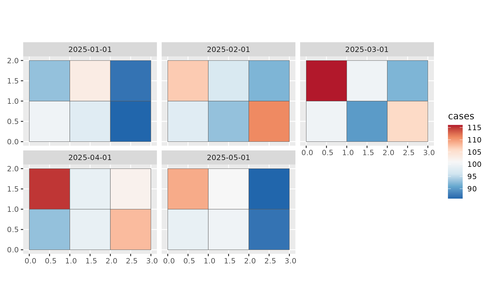

stars-object.RmdOur package sfclust is designed to work with
spatio-temporal data structured as a stars object. In this
vignette, we demonstrate how to create and manipulate a basic
stars object.
#> Loading required package: abind#> Loading required package: sf#> Linking to GEOS 3.12.1, GDAL 3.8.4, PROJ 9.4.0; sf_use_s2() is TRUETo begin, we need data that varies across both regions and time. In this example, we simulate such data for illustrative purposes, but in practice, this would come from your study’s specific regions and time periods.
set.seed(10)
space <- st_make_grid(cellsize = c(1, 1), offset = c(0, 0), n = c(3, 2))
time <- seq(as.Date("2025-01-01"), by = "1 month", length.out = 5)Next, we simulate variables associated with each region and time
point. In this case, we create values for cases,
temperature, and precipitation. Each variable
is stored in a matrix where rows correspond to regions and columns to
time points.
stars object
We now use the simulated data to construct a stars
object. This object will contain spatial, temporal, and variable
dimensions. While there are several ways to build such objects, the
following method is commonly used:
stdata <- st_as_stars(
cases = cases, temperature = temperature, precipitation = precipitation,
dimensions = st_dimensions(geometry = space, time = time)
)
stdata#> stars object with 2 dimensions and 3 attributes
#> attribute(s):
#> Min. 1st Qu. Median Mean 3rd Qu.
#> cases 86.000000 93.0000000 99.00000000 98.90000000 102.7500000
#> temperature -2.060541 -0.4165786 0.06808151 0.02795936 0.5496759
#> precipitation -1.676105 -0.7343718 -0.17034766 -0.09712102 0.4299561
#> Max.
#> cases 116.000000
#> temperature 1.766004
#> precipitation 2.106161
#> dimension(s):
#> from to refsys point
#> geometry 1 6 NA FALSE
#> time 1 5 Date FALSE
#> values
#> geometry POLYGON ((0 0, 1 0, 1 1, ...,...,POLYGON ((2 1, 3 1, 3 2, ...
#> time 2025-01-01,...,2025-05-01stars object
Once the stars object is created, you can use any of the
methods provided by the stars
package. For example, we can visualize the cases variable
across time:
ggplot() +
geom_stars(aes(fill = cases), data = stdata) +
facet_wrap(~ time) +
scale_fill_distiller(palette = "RdBu")
You can also add additional variables to the stars
object. For instance, let’s add a population variable:
#> stars object with 2 dimensions and 4 attributes
#> attribute(s):
#> Min. 1st Qu. Median Mean 3rd Qu.
#> cases 86.000000 93.0000000 99.00000000 98.90000000 102.7500000
#> temperature -2.060541 -0.4165786 0.06808151 0.02795936 0.5496759
#> precipitation -1.676105 -0.7343718 -0.17034766 -0.09712102 0.4299561
#> population 953.000000 975.0000000 1004.00000000 999.60000000 1028.0000000
#> Max.
#> cases 116.000000
#> temperature 1.766004
#> precipitation 2.106161
#> population 1038.000000
#> dimension(s):
#> from to refsys point
#> geometry 1 6 NA FALSE
#> time 1 5 Date FALSE
#> values
#> geometry POLYGON ((0 0, 1 0, 1 1, ...,...,POLYGON ((2 1, 3 1, 3 2, ...
#> time 2025-01-01,...,2025-05-01